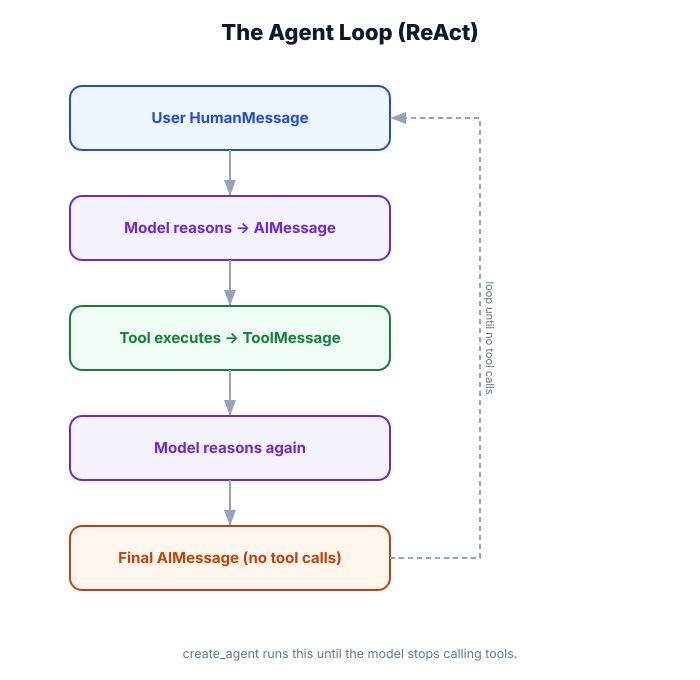

Your First Agent
What you'll do: Install LangChain, set up API keys, write a working agent with a tool, run it, and read the output. By the end of this module you'll have something real running — and we'll dissect each line so nothing is magic.

↗ Open full size · ⬇ Edit in Excalidraw — labels use real LangChain classes.
Step-by-Step Setup
Create a virtual environment
Always isolate your LangChain project. This keeps dependencies clean.
Install the packages
The core package plus at least one provider package. We'll use OpenAI here.
Set your API key
Never hardcode keys. Use environment variables or a .env file.
Write the agent
About 20 lines to a working, tool-using agent.
Run it and read the output
We'll walk through what every line of output means.
1. Install
On Command Prompt (cmd) the activate line is .venv\Scripts\activate.bat instead. If PowerShell blocks the script with an execution-policy error, run Set-ExecutionPolicy -Scope Process -ExecutionPolicy RemoteSigned once for the session, then activate again. Use python (not python3) on Windows.
langchain — core framework (create_agent, tools, memory). langchain-openai — OpenAI model integration. python-dotenv — loads .env files for local development. If you prefer Anthropic: pip install langchain-anthropic.
2. Configure Your API Key
Create a .env file in your project root:
Sign up at smith.langchain.com (free tier available). With LANGSMITH_TRACING=true, every agent run is automatically logged — you'll see exactly which tools were called, what the model "thought", and how long each step took. This is invaluable for debugging.
3. Write Your First Agent
Here's the complete, runnable file — we'll dissect every part after:
from dotenv import load_dotenv
load_dotenv() # loads .env file
from langchain.agents import create_agent
from langchain.chat_models import init_chat_model
from langchain.tools import tool
# ── 1. Define a tool ─────────────────────────────────────────────────────────
@tool
def multiply(a: float, b: float) -> float:
"""Multiply two numbers together. Use this for any multiplication."""
return a * b
@tool
def add(a: float, b: float) -> float:
"""Add two numbers together. Use this for addition."""
return a + b
# ── 2. Create the model ──────────────────────────────────────────────────────
model = init_chat_model("openai:gpt-4o-mini", temperature=0)
# ── 3. Create the agent ──────────────────────────────────────────────────────
agent = create_agent(
model=model,
tools=[multiply, add],
system_prompt="You are a helpful math assistant. Show your reasoning.",
)
# ── 4. Invoke (single turn) ──────────────────────────────────────────────────
result = agent.invoke({
"messages": [{"role": "user", "content": "What is 25 multiplied by 4, then add 17?"}]
})
# ── 5. Print the response ────────────────────────────────────────────────────
print(result["messages"][-1].content)Line-by-Line Breakdown
The @tool decorator
Turns any Python function into a LangChain tool. Three things matter:
- Type hints are required — they generate the JSON schema the model uses to call the tool correctly
- The docstring is the tool description — the model reads this to decide when to use the tool
- The function name is the tool name — keep it clear and action-oriented
init_chat_model()
Initializes a chat model using a "provider:model-name" string. The temperature=0 makes the model deterministic — good for tools where you want consistent behavior. We cover model configuration fully in Module 03.
create_agent()
The main factory. We pass three things: the model, the list of tools, and an optional system prompt. The agent automatically handles:
- Converting tools to the format the model expects
- Running the ReAct loop (reason → call tool → observe → reason again)
- Returning the final message when the model decides it's done
agent.invoke()
Runs the agent synchronously (blocking). The input is always a dict with a messages key. You can pass plain dicts (as shown) or LangChain message objects — both work.
What the Agent Actually Does
Run the script. Here's what happens internally:
multiplyaddExpected Output
Reading the Full Message History
If you want to see what happened inside the agent loop, print all messages:
for msg in result["messages"]:
print(f"{msg.__class__.__name__}: {msg.content[:80] if msg.content else '(tool call)'}")
if hasattr(msg, 'tool_calls') and msg.tool_calls:
for tc in msg.tool_calls:
print(f" → Tool: {tc['name']}({tc['args']})")Add LangSmith Tracing (Recommended)
If you set LANGSMITH_TRACING=true, every run is automatically traced in the LangSmith UI. No code changes needed — it's automatic when the env var is set. You'll see:
- The full message chain (inputs and outputs for every model call)
- Tool calls with their arguments and results
- Latency and token usage for each step
- The ability to replay and debug any run
init_chat_model() takes a "provider:model-name" string. Common mistakes: using the OpenAI SDK's model name directly ("gpt-4o" without provider prefix) will fail — always include the provider: "openai:gpt-4o". See Module 03 for all valid provider strings.
If you forget type hints on a @tool function, LangChain can't generate the schema and the model won't know how to call it correctly. This will fail silently or produce wrong results. Type hints are not optional — they're the schema.
Variations to Try
# Use Anthropic instead of OpenAI (pip install langchain-anthropic first)
model = init_chat_model("anthropic:claude-3-5-haiku-20241022", temperature=0)
# Add more tools
@tool
def get_word_length(word: str) -> int:
"""Get the number of characters in a word."""
return len(word)
# Invoke with a different question
result = agent.invoke({
"messages": [{"role": "user", "content": "How many letters in 'LangChain'?"}]
})
# Stream tokens (shows output as it generates)
for chunk in agent.stream(
{"messages": [{"role": "user", "content": "What is 12 * 12?"}]},
stream_mode="messages"
):
if chunk[1].get("langgraph_node") == "agent":
for msg in chunk[0]:
if hasattr(msg, "content") and msg.content:
print(msg.content, end="", flush=True)Real-World Use Case
🔧 Internal Data Analysis Assistant
Replace the math tools with actual data functions: query_database(sql: str), generate_chart(data: dict, type: str), send_slack_message(channel: str, text: str). The agent pattern is identical — just different tools. A business analyst types in plain English, and the agent figures out which database queries to run and how to combine the results.
The five-step pattern — define tools, init model, create_agent, invoke, read output — applies to every agent in this course. In the next three modules we'll go deeper on each building block: models (Module 03), messages (Module 04), and tools (Module 05).